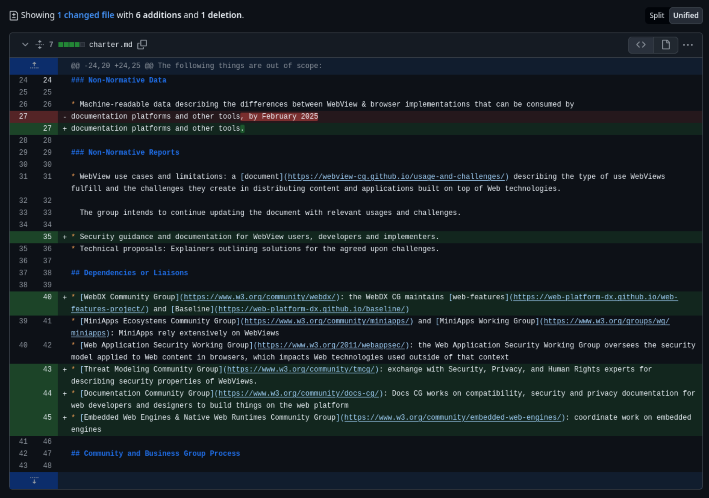
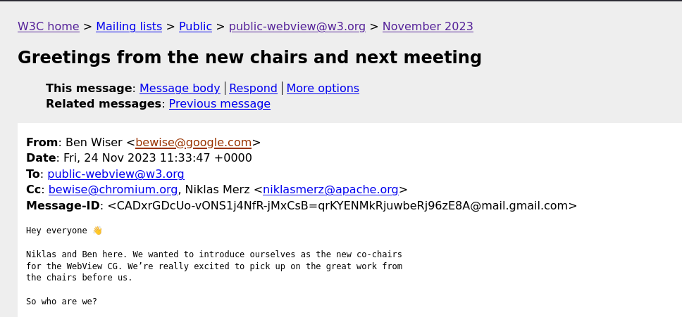

Leaving slide mode.
WebView Community Group Meeting
TPAC 2026
Dublin, Ireland
hybrid meeting
26–30 October 2026
Agenda
Intros & admin
A.WebViews CG Past, Present & Future
- Charter updates
- Work streams
- Recap past work
- What's next?
B. WebView Security & Threat Modelling
- What do we want to produce?
- Getting started
Intros & Admin
-
Notes link:
bit.ly/webview-cg-tpac26
- Please add your your name to queue
- When speaking, please first announce your name and affiliation
Charter Updates
Updated on Sept 2026

Chairing
Chair since Nov 2023 - Solo chair since early 2025

What's next?
Let's look in the future for
- WebViews
- MiniApps
- Security scrutiny
- Embedding the Web
- AI using the Web
- More...
Security Workstream
What type of information do we want to provide as the Community Group?
- Security considerations as group notes
- Information in caniwebview.com
- Contribute to the Threat Model of The Web
Thank you!
Meetings
- Thinking outside the browser - More coordination for better web standards for embedding
- Best day & time for monthly meetings?
Check out the notes document and help our scribe
Remote participants can hear us?
Intro why you care about WebViews
What do you want to take away from this session?
Later we will look at the future of WebViews, pls share what you are trying today and think what will come.